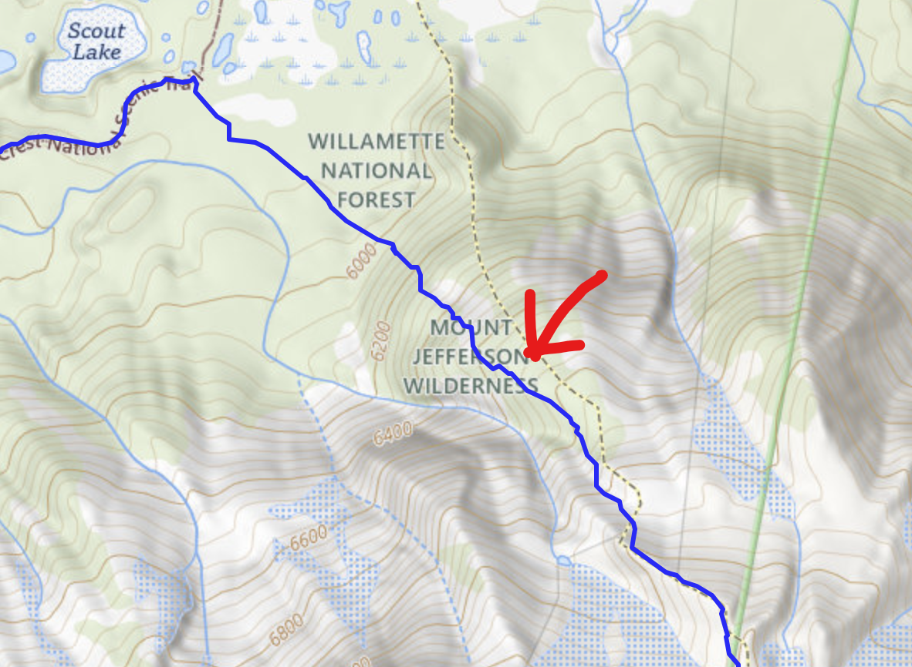
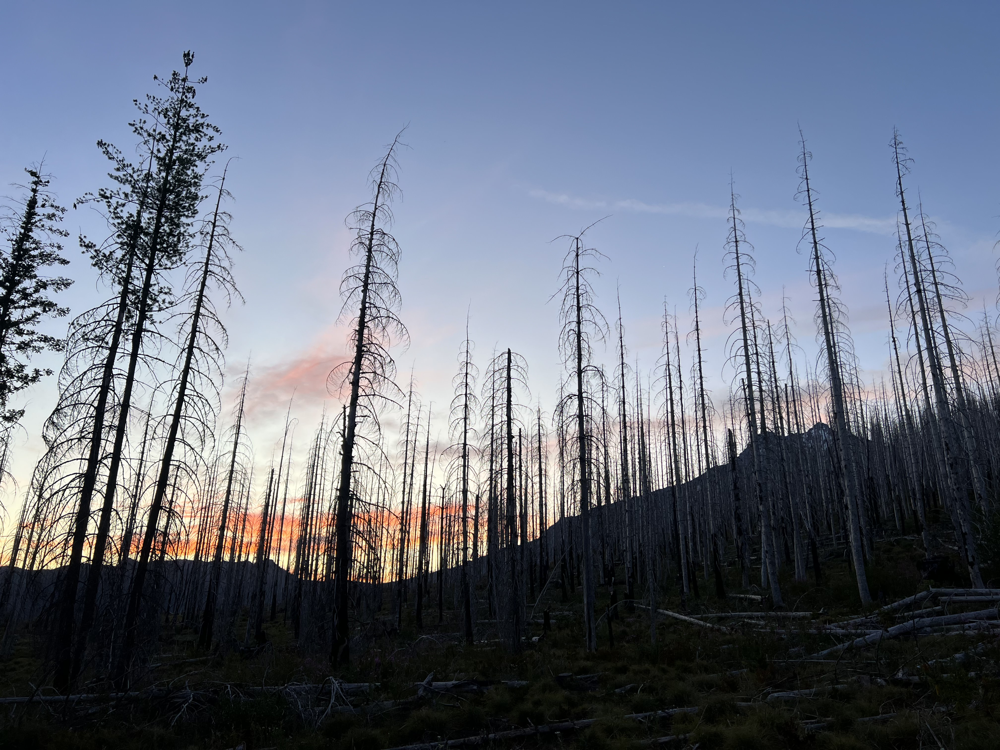
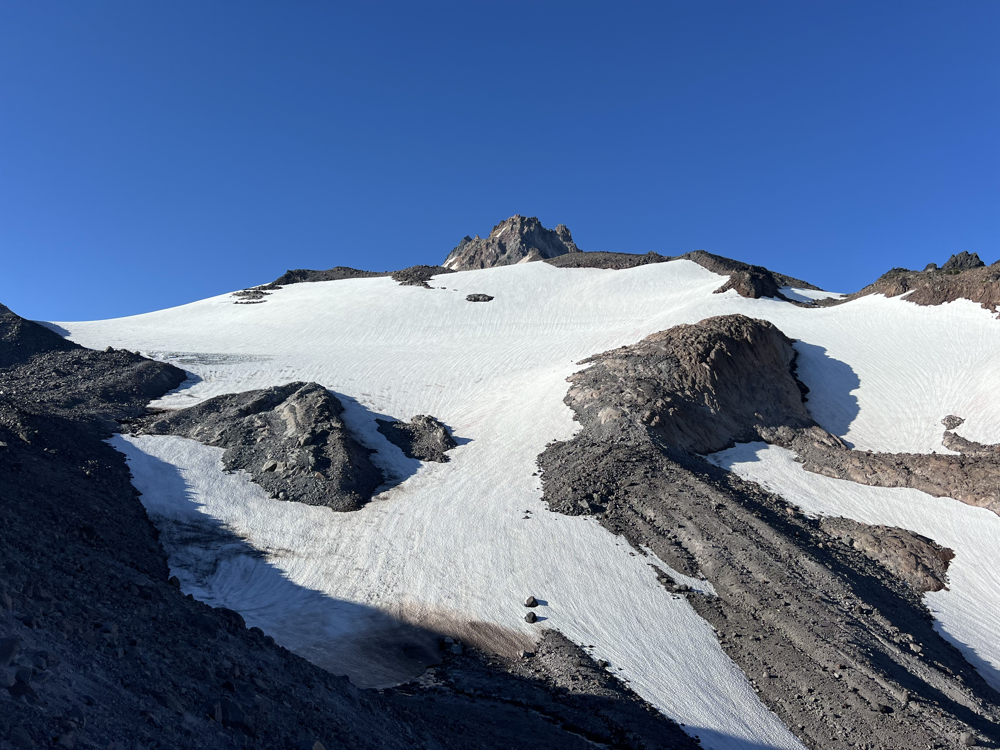

Mount Jefferson High Loop


I’ve been thinking about the Mt. Jefferson High Loop for almost now a year, and I’m ecstatic I finally crossed it off the to-do list.
Background
Mt. Jefferson being Oregon’s second tallest mountain, and arguably the most difficult to access of the big Cascade peaks, it sees much less traffic than any of the other large peak and holds a certain sense of solitude and wilderness that is hard to find elsewhere.
I’ve spent a lot of time on Jefferson and in the surrounding nature it has to offer (Hunt’s Cove, Pamelia, Jefferson Park, the Tables, Goat peak, North cinder cone, etc…), and keep coming back. This route seemed to have it all. The flowered meadows in Jeff park, views of the Jeff Park Glacier route (5.2 Mod snow), sightseeing and skirting the edge of Whitewater glacier for hours, abundant water from galcial melt all day long, a peek at Goat peak and Shale lake, and well manicured shaded PCT miles to finish it off.
Route Acknowledgment
Although I’d love to claim that I came up with this route on my own, I have to mention Jarrett Widman’s trip report for the invaluable beta on the route, both in description and photos, and for being the first and only person that I could find having completed this route.
Tribal Regulations

If you're planning on completing this route, or travelling on the East face of Mt. Jefferson in general, make sure you check the most up to date tribal regulations from the Warm Springs reservation, as you will be travelling on their land when on the East face.
Not-so-tribal regulations
Make sure you have a valid form of parking pass for a USFS trailhead. Most commonly this would be a Northwest forest pass, or an America the Beautiful pass. If you start from woodpecker like I did, just fill out a free trail permit when you get there. If you’re starting from Pamelia instead, make sure you reserve and pay for a permit ahead of time!
GPS Tracks
Although there is no extremely difficult routefiniding on this route, it’s always nice to have GPS tracks to follow. Feel free to download mine by clicking this link, or preview the route below.
Statistics and route choice
Overall, the route we took totaled up to:
- 21 miles total miles
- 14 miles on trail
- 7 miles off trail
- 6,000ft of gain
- 7 hours and 13 minutes start to finish
Of course, considering the large portion of this route that is spent doing your own route finding, these numbers might vary a good amount from person to person. I would emphasize that statement for how long the route takes to complete. We spent three and a half hours on the East side of Jefferson travelling on loose rock, but depending on your comfort running/hiking on boulders and smaller rocks this could take much longer or go faster.
When I first heard about this route and looked it up on google, I found Jarrett Widman’s trip report and his GPS track. After spending some time inspecting it, I made a couple changes to the route that I felt made sense.
Firstly, instead of starting at Pamelia Lake trailhead like he did, I decided to start from Woodpecker ridge trailhead, the nearest trailhead to the North. I chose to do this for a couple reasons:
- It makes the route 3 miles shorter
- It also cuts out 600ft of elevation gain
- It guarantees you’ll get a permit since they’re free and unlimited
Second, I chose to run this loop clockwise instead of counterclockwise for two reasons:
-
Going clockwise when starting from Woodpecker gets you to the off trail section much sooner. Not only does this save the easy PCT miles for last, but there isn’t a single moment of shade on the East face, whereas the last 8 miles on the PCT are almost entirely shaded.
-
Running the East face SOBO means you’re slowly dropping elevation as you route find, meaning you consistently have an elevated vantage point to plan where you’re going and how to get over the next moraine.
-
You get to run up the steep dirt and small cliff band that we took to go from Jeff park up to the toe of whitewater glacier.

The route!
 Our day started at Woodpecker Ridge trailhead with alarms going off at 5:00am sharp. I got out of my tent and Will emerged from his sleeping platform in the back of his Outback. For a mostly off-trail, mostly sun exposed, mostly boulder hopping 20+ miles day, we both would have preferred getting up earlier but our unplanned lack of headlamps forced us to wait until we could see the ground we were running on to start our day. So, we aimed to be on trail by 5:45am.After downing a cup of yogurt, half a muffin and one banana, I threw on my 8L running vest. Last night I had packed it with plenty of snacks (including Jalapeño chips and pickle spears!), 1 liter of water, sunscreen, a Patagonia houdini, gaiters for scree, and good sunglasses for our time on or near Whitewater glacier. We hit the trail at 5:39am, just slightly ahead of schedule.
The first few miles are nothing extraordinary, other than having a good view of the behemoth you’re about to run around. Up and over Woodpecker Ridge, down to the PCT and NOBO to Jeff park you go. These miles are a good warmup, and give you some time to wake up before getting to the views you should appreciate with a fully awake brain! After 4.8 relatively easy miles and 58 minutes on trail, we had reached Jefferson Park.
Here we stopped to look at the slope we planned to go up, which differed from Jarrett’s route and would save some distance. it looked mellow enough, and had a small cliff band near the top but we could both see a small gully that would give us a way through. We guessed it might be 15 feet of 4th class at worse, so we decided to go for it and started cutting through meadows to reach the slope.
After some swimming through plants on the uphill, we reached the small gully (with a great view of Park Butte behind us), and made our way through it. Turns out it was less vertical than we thought it was going to be, just some steep dirt and loose rock holds for 15~20 vertical feet.
Soon we broke out of treeline and emerged onto the never ending sea of rocks that would be the next 3 hours of our day. Running on talus covered ridgelines in a general southward manner brough us good views of Jefferson Park glacier, and the cascades to the North.

From here a repetitive ritual began. Get to a high vantage point, spot the next high vantage point to the South, find the least rocky/bouldering/cliffy path available, run that path, climb up the the vnatage point, and repeat. Along the way we passed several pro-glacial lakes, shimmering blue from silt. These all had small streams of ice cold glacial melt feeding them which made for perfect drinking stops.
Never crossing very difficult terrain, we simply hopped across snow, rock and glacial sludge to continue southwards. There are some moderately sized cliffs here and there, but they’re all avoidable. With our routefinding and path choice, the entire route stayed non technical. Perhaps some 2nd class terrain at worst. That being said, due to the nature of walking and running on big loose boulders and small loose scree, you do use your hands plenty during the route!
Onward we went until we finally started seeing signs of life in the distance ahead of us. Trees and plants! By this point, we were approaching our exit from the rocky terrain had great views of the Sisters and TFj to the South.
Running past some interesting dirt spikes, we finally descended back to greenery.
After one final fill up of water from a source that we trusted to be unfiltered, we ran past Goat peak and started descending towards Shale lake. Through alpine old growth and small meadows with dried up creeks beds carved into them, we stepped foot on a trail for the first time since 7 AM.
A quick dip in shale lake to cool off, and 6 miles of running on the PCT NOBO brought us back to the Woodpecker Ridge turnoff. Twenty minutes later the Subaru was back in sight and the Jefferson High Loop was ticked off my to-do list.